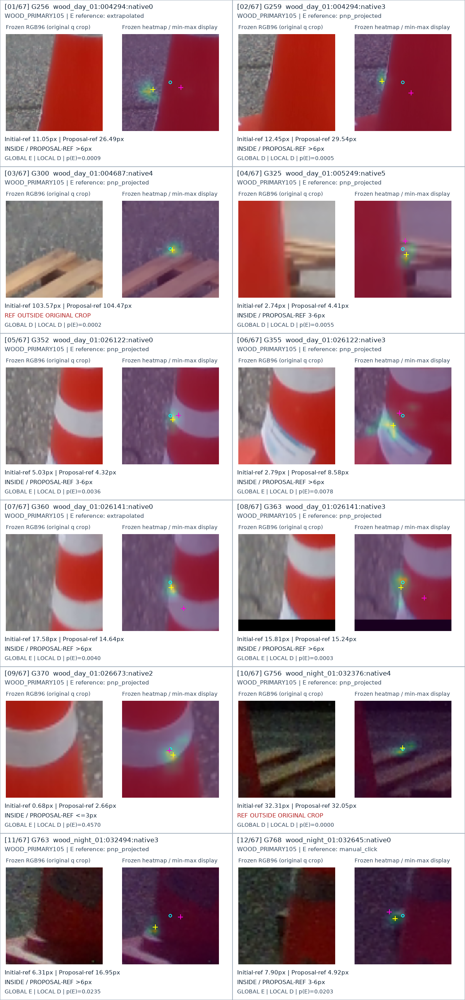
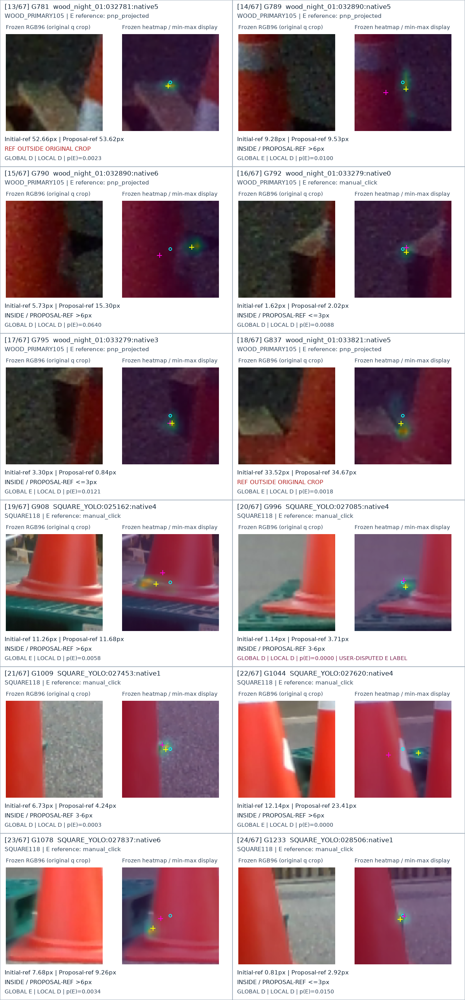
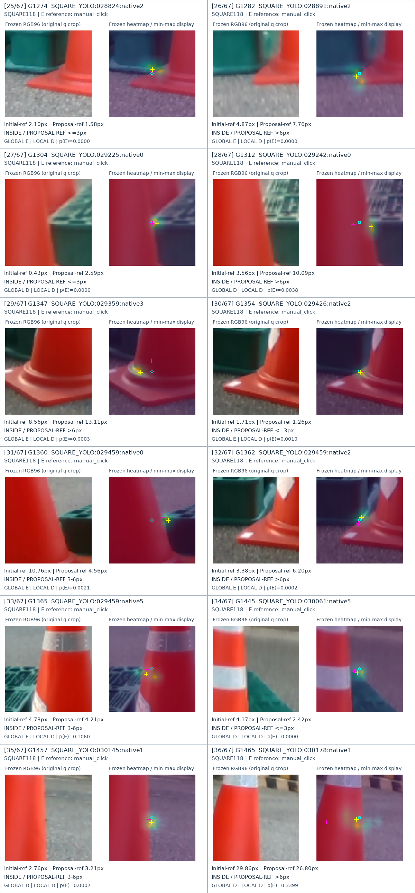
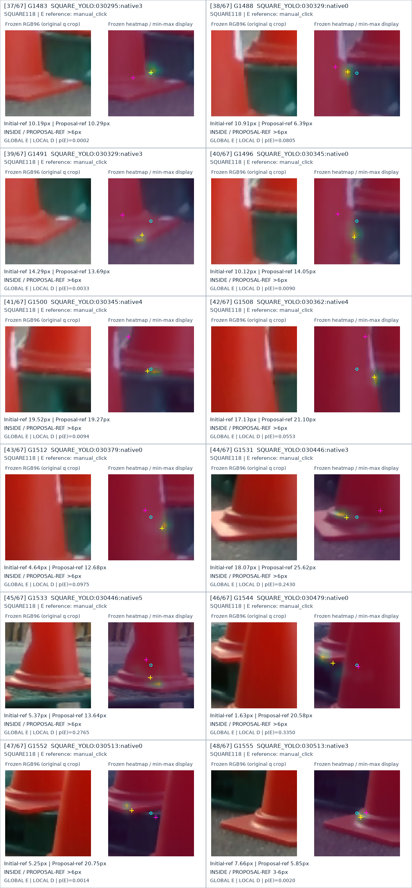
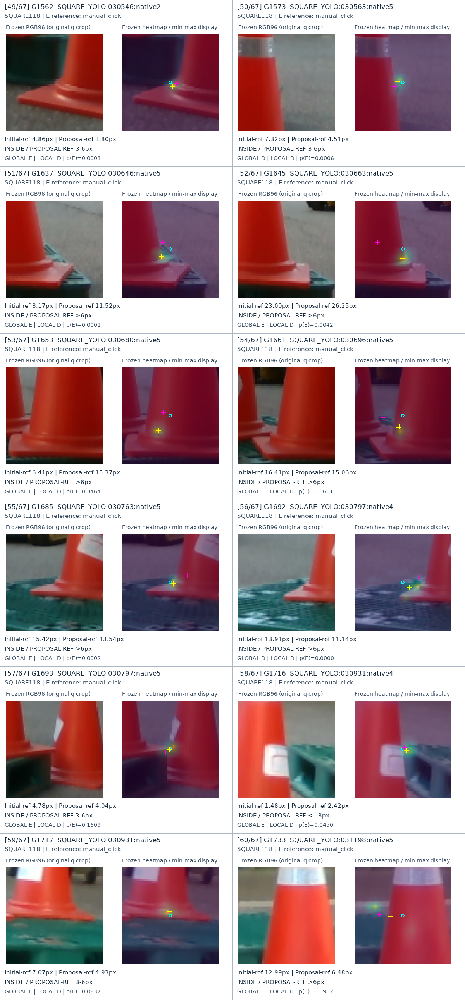
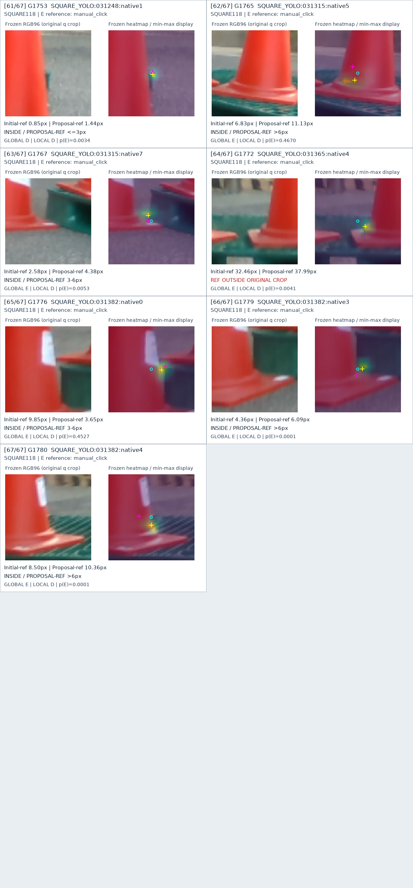

왼쪽: 실제 동결 RGB96 입력. 오른쪽: 동결 V263 JOINT heatmap의 crop별 min/max 표시. 청록 ○ 초기 query · 자홍 + 기존 E 참조 · 노랑 + 위치 후보. 참조가 원래 crop 밖이면 자홍 점을 강제로 잘라 표시하지 않고 OUTSIDE로 적었습니다. 색 밝기는 보임 확률이 아닙니다.
분류 category는 기존 위치 거리 구간이며 육안 원인 정답이 아닙니다. 부분 노출과 native 대응의 모호함을 자동으로 새 라벨로 바꾸지 않았습니다.





